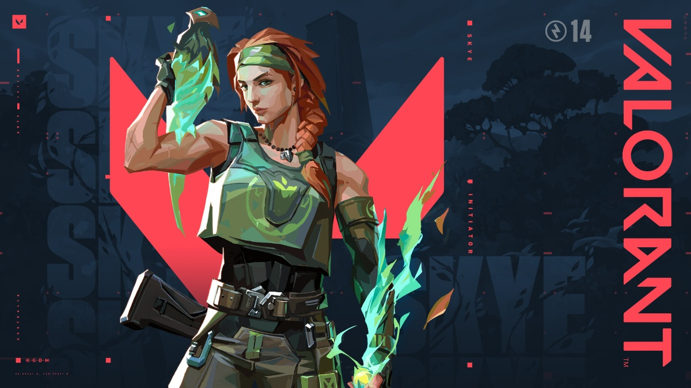

Skye
Skye je přírodní léčitelka z Austrálie, která přináší sílu přírody přímo do boje. Pomocí svých zvířecích spojenců a léčitelských schopností podporuje tým v každé situaci.
Schopnosti
Regrowth (C)
Cena: 200 kredity
Skye může léčit spoluhráče ve svém okolí pomocí paprsku z rostliny, dokud jí nedojde energie.

| Schopnost | Cena | Cooldown | Typ | Popis |
|---|---|---|---|---|
| Regrowth | 200 | — | Léčení | Hromadné léčení spojenců |
Trailblazer (Q)
Cena: 250 kredity
Vypustí Tasmánského tygra, kterého může ovládat a explodovat pro poškození a omráčení nepřátel.

| Schopnost | Cena | Cooldown | Typ | Popis |
|---|---|---|---|---|
| Trailblazer | 250 | 40s | Průzkum | Explodující zvířecí průzkumník |
Guiding Light (E)
Cena: Zdarma (dobíjí se)
Ovládá ptáka z energie, který oslní nepřátele při explozi.

| Schopnost | Cena | Cooldown | Typ | Popis |
|---|---|---|---|---|
| Guiding Light | 0 | 35s | Flash | Oslňuje pomocí ptáka |
Seekers (X) Ultimátní
Vypustí tři entity, které hledají a sledují tři nejbližší nepřátele.

| Schopnost | Cena | Cooldown | Typ | Popis |
|---|---|---|---|---|
| Seekers | Ult | 1× za 7 bodů | Sledování | Zaměřuje tři cíle |
